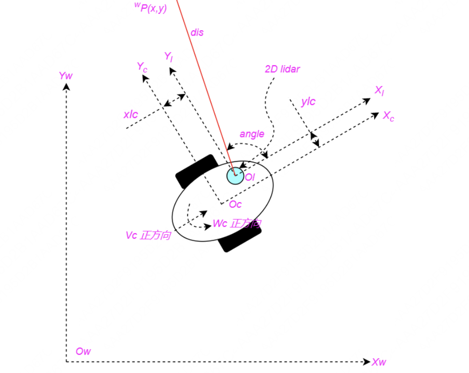

问题的描述是这样的（用我理解后的语言来表达）：
以搭载2D激光雷达（2D-Lidar）的扫地机器人为例，只考虑在二维平面下的关系。世界坐标系$O_W$，机器人坐标系$O_C$，雷达坐标系$O_L$，雷达坐标系的方向轴与机器人坐标系一致，雷达搭载在机器人上，用机器人坐标系$O_C$的坐标表达，雷达的位置为$(xlc, ylc)$，现在空间中有一个物体点P，通过2D雷达对其测量（雷达旋转方向为逆时针），得到对应的角度$angle$和距离$dis$，现在假设扫地机器人运动的角速度是$w_c$，线速度是$v_c$，在$t_0$时刻时，机器人坐标系$O_C$与世界坐标系$O_W$重合，这里的角度单位都是弧度，距离单位都是米。
现在给这样一组数据，问在$t_1$时刻时，物体点P在世界坐标系$O_W$下的坐标：
angle、dis、xlc、ylc、 vc、wc、t1

需要理解的前提
首先，对于输入数据的理解：可以将测试数据作为一个验证情况，因为，当世界坐标系$O_W$，机器人坐标系$O_C$，雷达坐标系$O_L$之间的关系表达明确时，不管带入什么测试数据，都应该是满足的。
另外，有一个常识需要补充：在C++环境以及处理物体学、数学分析等进行三角函数计算时，使用的都是弧度制， 1弧度 $\frac{180}{\pi}$度，1 度 = $\frac{\pi}{180}$弧度。
double degrees = 90.0;
double radians = degrees * (M_PI / 180.0);
double sinValue = sin(radians); // 使用弧度
🌟进行一步一步拆解
t时间后机器人运动的位置
首先需要理解，扫地机器人是怎么运动的，在这里知道机器人运动同时拥有角速度$w_c$，线速度$v_c$。
一般情况下，移动机器人是通过控制两个并行轮子的速度差（差速）进行旋转的。两个轮子速度相同时，移动机器人将直线运动，两个轮子速度不同时，移动机器人将绕着某一点进行旋转运动，这个点就是即时转动中心（Instantaneous Center of Rotation, 简称 ICC）。
也就是说，机器人此时的运动模型是一个圆弧运动，运动的半径$R = \frac{v_c}{w_c}$，运动的角度可以通过$\theta = w \cdot t$得到，而对于机器人中心点的位置情况则可以通过极坐标的关系来得到，也就是机器人中心为一点，绕着ICC为原点，进行半径为R的圆周运动，转动了$\theta = w \cdot t$角度，那么转动$t$时间后机器人中心点的位置以XY坐标系（笛卡尔坐标系）表达就是：
- $X_{t} = R \sin(w_c \cdot t)$
- $Y_{t} = R (1 - \cos(w_c \cdot t))$
由此假设以机器人坐标系$O_C$原点来计算，那么在t时间后，$O_C$原点的坐标在世界坐标系$O_W$上的表达为：
- $X_{W_C} = R \sin(w_c \cdot t)$
- $Y_{W_C} = R (1 - \cos(w_c \cdot t))$
即时转动中心（Instantaneous Center of Rotation）
在任意给定瞬间，一个在平面上进行复合运动（即同时包含平移和旋转）的物体看起来是围绕一个假想点进行旋转，这个点就是即时转动中心。
这个点可能位于物体内部，也可能位于物体外部（取决于左右轮的速度），甚至可能无限远（这种情况下，物体的运动可以看作是纯平移）。
假设一个通过两个并行轮子进行差速驱动的移动机器人，左右轮子的速度分别为$V_l$和$V_r$，两轮中心之间距离为$L$，那么可以定义机器人的线速度$v_c$和角速度$w_c$如下：
- 线速度$v_c$，表示机器人移动时机器人中心点的速度，通过左右轮速度的平均值来估计： $$ v_c = \frac{V_r + V_l}{2} $$
- 角速度$w_c$描述了机器人绕ICC的旋转速度，可以通过左右轮速度差与轮距的比值来计算（通过$v = \omega \cdot r$得到）： $$ w_c = \frac{V_r - V_l}{L} $$
机器人绕ICC的圆弧运动半径$R$（从ICC到机器人中心的距离），根据$v = \omega \cdot r$可以得到： $$ R = \frac{v_c}{w_c} $$
将上述定义的$v_c$和$w_c$代入到$R$的公式中可以得到： $$ R = \frac{\frac{V_r + V_l}{2}}{\frac{V_r - V_l}{L}} $$ $$ R = \frac{L}{2} \cdot \frac{V_r + V_l}{V_r - V_l} $$
另一种数学解释
对于ICC的计算，在任意瞬间，机器人的左右轮到ICC的距离固不变，形成一个圆周运动。假设右轮比左轮快，那么ICC位于机器人左侧，ICC距离机器人的中心点为$R$。
由于机器人的左右两个轮子绕ICC的旋转半径不同，但是它们完成一次完整旋转所需的时间相同，因此有：
- 左轮的圆周速度是$V_l$，旋转半径是$R - \frac{L}{2}$。
- 右轮的圆周速度是$V_r$，旋转半径是$R + \frac{L}{2}$。
根据圆周运动的速度公式$v = \omega \cdot r$，得到：
- $V_l = w_c \cdot (R - \frac{L}{2})$
- $V_r = w_c \cdot (R + \frac{L}{2})$
将$w_c$带入解方程可以得到：
$$ R = \frac{L}{2} \cdot \frac{V_r + V_l}{V_r - V_l} $$
但是更直观的方式是利用角速度和线速度的定义来直接求解$R$，如下：
$$ w_c = \frac{V_r - V_l}{L} \Rightarrow w_c \cdot L = V_r - V_l $$
并且
$$ v_c = \frac{V_r + V_l}{2} $$
而$R$可以理解为机器人（中心点）绕ICC旋转的半径，其线速度$v_c$与角速度$w_c$之间存在如下关系：
$$ R = \frac{v_c}{w_c} $$
圆周运动中的位置计算
对于绕ICC的圆周运动，可以用极坐标系下的圆方程来描述物体的位置。在极坐标系中，一个点的位置由它到原点的距离（半径$R$）和一个角度（$\theta$）来定义。
将ICC视为原点，则机器人中心就是这个点，其位置转换为笛卡尔坐标系来表示就是：
- $X = R \sin(\theta)$
- $Y = R - R \cos(\theta) = R (1 - \cos(\theta))$
物体点P在机器人坐标系$O_C$的表达
将2D-Lidar看作为一个点，也就是原点$O_L$，那么在雷达坐标系$O_L$下，物体点P可以直接通过三角关系得到在雷达坐标系$O_L$的表达：
- $X_{L_p} = dis \cdot \cos(angle)$
- $Y_{L_p} = dis \cdot \sin(angle)$
而雷达坐标系$O_L$和机器人坐标系$O_C$只相差了一个平移关系，也就是$(xlc, ylc)$，因此可以将平移的量加上得到在机器人坐标系$O_C$的表达
- $X_{C_p} = dis \cdot \cos(angle) + xlc$
- $Y_{C_p} = dis \cdot \sin(angle) + ylc$
物体点P在世界坐标系$O_W$的表达
因为机器人坐标系$O_C$和世界坐标系$O_W$相差了一个旋转，机器人坐标系$O_C$从与世界坐标系$O_W$重合的状态，通过逆时针旋转$\theta = w \cdot t$得到现在的状态。
也就是说，以机器人坐标系$O_C$的表达的物体点P也需要通过这个**逆时针旋转$\theta = w \cdot t$**得到在当世界坐标系$O_W$的表达；
因此世界坐标系$O_W$的物体点P为$(X_{W_p},Y_{W_p})$可以通过$(X_{C_p},Y_{C_p})$应用上逆时针旋转，再加上$O_C$的偏移得到。
-
$X_{W_p} = X_{C_p} \cdot \cos{\theta} - Y_{C_p} \cdot \sin{\theta} + X_{W_C}$
-
$X_{W_p} = X_{C_p} \cdot \sin{\theta} + Y_{C_p} \cdot \cos{\theta} + Y_{W_C}$
注意，逆时针为正（以右手坐标系来看，X轴朝左，Y轴朝上）
逆时针旋转角度 $\theta$ 的旋转矩阵的证明
从二维旋转的基本几何出发。假设我们有一个点 $P$，在原点 $O$ 的坐标系中的初始位置为 $P(x, y)$，需要求出 $P$ 绕原点逆时针旋转角度 $\theta$ 后的新位置 $P’(x’, y’)$：
旋转前，点 $P$ 的位置可以由极坐标 $r$（原点到 $P$ 的距离）和 $\phi$（$x$ 轴到 $OP$ 的角度）确定。在笛卡尔坐标系中，有：
- $x = r\cos(\phi)$
- $y = r\sin(\phi)$
当 $P$ 绕原点逆时针旋转 $\theta$ 后，它的新位置 $P’$ 可以用新的极坐标 $r$ 和新的角度 $\phi + \theta$ 来表示（$r$ 保持不变，因为旋转不改变原点到 $P$ 的距离）。因此，旋转后的坐标为：
- $x’ = r\cos(\phi + \theta)$
- $y’ = r\sin(\phi + \theta)$
使用三角恒等式 $\cos(a + b) = \cos(a)\cos(b) - \sin(a)\sin(b)$ 和 $\sin(a + b) = \sin(a)\cos(b) + \cos(a)\sin(b)$，我们可以将 $x’$ 和 $y’$ 重写为：
- $x’ = r\cos(\phi)\cos(\theta) - r\sin(\phi)\sin(\theta)$
- $y’ = r\sin(\phi)\cos(\theta) + r\cos(\phi)\sin(\theta)$
将 $x = r\cos(\phi)$ 和 $y = r\sin(\phi)$，代入得到：
- $x’ = x\cos(\theta) - y\sin(\theta)$
- $y’ = x\sin(\theta) + y\cos(\theta)$
将上述方程写成矩阵形式，得到：
$$ \begin{bmatrix} x’ \ y’ \end{bmatrix} = \begin{bmatrix} \cos(\theta) & -\sin(\theta) \\ \sin(\theta) & \cos(\theta) \end{bmatrix} \begin{bmatrix} x \ y \end{bmatrix} $$ 这个矩阵就是逆时针旋转角度 $\theta$ 的旋转矩阵 $R(\theta)$，能够将任何给定的点在二维平面上逆时针旋转 $\theta$ 角度，而不改变点到原点的距离。
如果旋转是顺时针方向的，角度 $\theta$ 将被视为负值，以右手坐标系来看，X轴朝左，Y轴朝上时，逆时针旋转是正方向，顺时针旋转则是负方向。
顺时针旋转角度 $\theta$ 的旋转矩阵可以通过将逆时针旋转矩阵中的角度 $\theta$ 替换为它的负值 $-\theta$ 来得到，因为 $\cos(-\theta) = \cos(\theta)$ 和 $\sin(-\theta) = -\sin(\theta)$。这意味着，对于顺时针旋转，旋转矩阵 $R_{cw}(\theta)$ 是：
$$ R_{cw}(\theta) = \begin{bmatrix} \cos(-\theta) & -\sin(-\theta) \\ \sin(-\theta) & \cos(-\theta) \end{bmatrix} $$ 使用三角函数的性质 $\cos(-\theta) = \cos(\theta)$ 和 $\sin(-\theta) = -\sin(\theta)$，得到：
$$ R_{cw}(\theta) = \begin{bmatrix} \cos(\theta) & \sin(\theta) \\ -\sin(\theta) & \cos(\theta) \end{bmatrix} $$ 因此，顺时针旋转矩阵直接使用正角度 $\theta$ 为：
$$ R_{cw}(\theta) = \begin{bmatrix} \cos(\theta) & \sin(\theta) \\ -\sin(\theta) & \cos(\theta) \end{bmatrix} $$ 这个矩阵可以用来将任何给定的点在二维平面上顺时针旋转 $\theta$ 角度，这与逆时针旋转从形式上看只是$\sin(\theta)$的正负号相反。
完整的C++实现
#include <iostream>
#include <cmath>
int main() {
// jj
double angle, dis, xlc, ylc, vc, wc, t1;
std::cin >> angle >> dis >> xlc >> ylc >> vc >> wc >> t1;
// angle为弧度制，wc为弧度/s
// dis为距离，vc为m/s
// 起点(0, 0), 角速度wc, 线速度vc
// 经过t1时间
double delta_v = vc * t1;
double delta_w = wc * t1;
// 机器人坐标系Oc，世界坐标Ow
double Xwc, Ywc;
double R = vc / wc;
Xwc = R * sin(delta_w);
Ywc = R * (1 - cos(delta_w));
// 打印Xwc, Ywc
// std::cout << Xwc << ' ' << Ywc << std::endl;
// 求P点在世界坐标系Ow的坐标
// 先求P点在Oc的坐标
double Xcp, Ycp;
Xcp = xlc + dis * cos(angle);
Ycp = ylc + dis * sin(angle);
// 打印Xcp, Ycp
// std::cout << Xcp << ' ' << Ycp << std::endl;
// 再求P点在Ow的坐标
double Xwp, Ywp;
Xwp = cos(delta_w) * Xcp - sin(delta_w) * Ycp + Xwc;
Ywp = sin(delta_w) * Xcp + cos(delta_w) * Ycp + Ywc;
// 打印Xwp, Ywp
std::cout << Xwp << ' ' << Ywp << std::endl;
return 0;
}